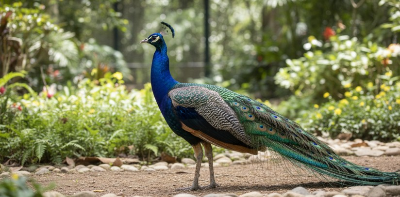

Lote 014 · Simulação

Pavão-azul
Pavo cristatus
Macho · 24 meses · Interior de SP
- Lance inicial fictício
- R$ 2.400
- Encerra em (tempo ilustrativo)
- 02d : 14h : 32m
Conhecer o lote · Pavão-azul
Oferta ilustrativa. Consulte as informações do animal, o criadouro de origem e a documentação prevista no lote antes de planejar qualquer lance.